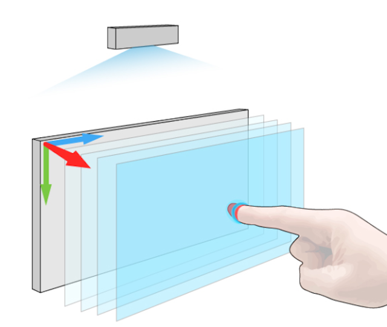
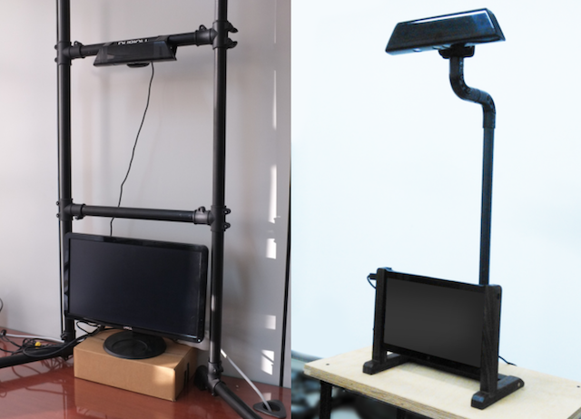

Observing the space front of a touch screen enables the touch screen to have an extra context for input. While normal touch screens only have TOUCHED/NOT_TOUCHED input variety, touch screen with multiple layered slit scanning can utilize the trajectory of fingertip. This Research was funded by Hyundai NGV.
 